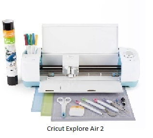
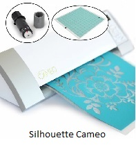

Digital Die-Cutters: The wave of the future?
Two of the top competitors in the digital die-cutting game include Cricut and Silhouette. Both offer scrapbookers the ability to create 2 or 3 dimensional cutouts that are fast and relatively easy.
A die-cutting maching can be costly, the Cricut ranges from $149.99 for the Cricut Explore One to $279.99 for the Cricut Explore Air 2 with a few options in between. Cricut is known for its use of cartridges with preloaded images that machine will cut for you.

Silhouette offers the Silhouette Portrait 2 for $199.99 and the Silhouette Cameo 3 for $299.99. Because the Sihouette was designed to plug into a computer, it allows you to create your own designs as well as use downloadable designs.
Which machine should you choose?
The Cricut is easier to use straight out of the box and it conitnues to add functionality. The Silhouette will take time to learn, but if designing your own die-cuts is your thing, the Silhouette may be right for you. Both come with a steep price tag, so you can still scrap old-school with a pair of scissors, some paper, and your imagination.
Tape Runners
Adhesives are an essential part of the scrapbooking process. Choose a tape runner that is comfortable to use and archival quality (acid free) so as not to damage your photographs. Permanent adhesive tapes are non-removeable. If you need to experiment before permanently attaching your photographs, consider a repositionable option.
| Brand | Description | Length | Refillable | Price |
|---|---|---|---|---|
| Paper Studio | Acid-free glue dots. Permanent. | 22 feet | No | $1.49 |
| Elmer's Craft Bond | Acid-free solid tape. Permanent. | 26.25 feet | Yes | $3.99 |
| E-Z Runner 3L | Acid-free solid tape. Permanent | 33 feet | Yes | $5.99 |
| E-Z Repositionable 3L | Acid-free glue dotes. Non-Permanent | 43 feet | Yes | $6.99 |